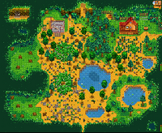
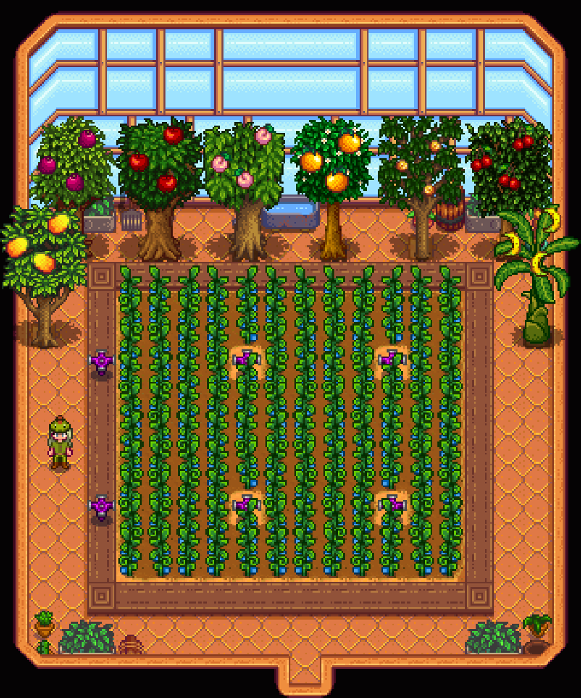

Sobre a Vida no Campo
Bem-vindo ao Vale Pelicano! Aqui você herdou a antiga fazenda do seu avô e tem a oportunidade de começar uma nova jornada longe da rotina estressante da cidade grande.
Com um conjunto de ferramentas simples e poucas moedas, você aprenderá a cultivar a terra, cuidar de animais e construir uma comunidade próspera.
Principais Atividades da Fazenda
Cultivo e Produção
A gestão diária da fazenda envolve organizar o tempo e os recursos disponíveis de maneira eficiente:
- Preparo do solo e plantio de sementes
- Rega diária e colheita dos frutos
- Criação de animais no celeiro e galinheiro:
- Galinhas e patos para produção de ovos
- Vacas e cabras para produção de leite
- Produção artesanal de queijos, geleias e vinhos

Estações do Ano e Organização
Cada ano no jogo é dividido em quatro estações de 28 dias cada. Acompanhar a troca de estação é fundamental para planejar a rotação de culturas:
- Primavera — Época de recomeço e plantio de chirivias e morangos.
- Verão — Período de calor intenso ideal para carambolas e mirtilos.
- Outono — Colheita de abóboras e preparação para o frio.
- Inverno — Foco na exploração de minas, pesca e melhoria de ferramentas.


Deseja se juntar à comunidade de agricultores da região? Acesse a nossa página de Cadastro do Clube Agrícola para registrar sua propriedade e receber apoio local.